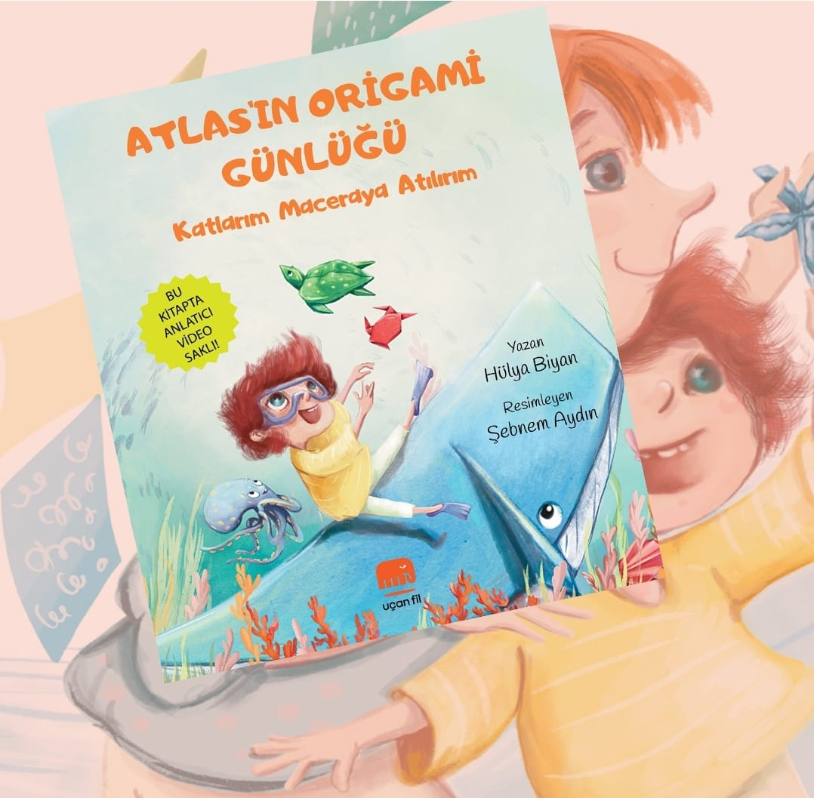

Resimli Çocuk Kitabı
Atlas'ın Origami Günlüğü
Resimleyen: Şebnem Aydın
“Katlarım, maceraya atılırım!” Atlas, elindeki kâğıtları katladıkça denizlerin derinliklerine açılan bir hayal yolculuğuna çıkar. Yaratıcılığı ve merakı kışkırtan, içinde küçük sürprizler saklı neşeli bir kitap.